DEF CON 34 - Social Engineering Village - What Scammers Know that Social Engineers Don't
Introducing three new techniques for your toughest cases.
Cyber Threat Intel &
AI Safety Research
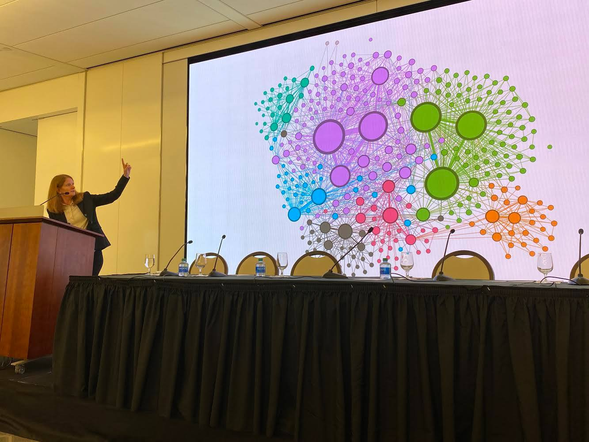
Dr. Megan Squire is a technical threat investigator focused on understanding how adversaries operate in online systems, including the misuse of AI, cyber-enabled scams, and coordinated influence campaigns.
She is currently Principal Threat Intelligence Researcher at F-Secure, where she investigates emerging threat patterns. Previously, at the Southern Poverty Law Center, she led investigations into extremist networks, disinformation campaigns, and illicit financing, applying data science and cybersecurity techniques to attribute and track coordinated threat activity.
Dr. Squire is the author of three books and more than 40 peer-reviewed publications, including award-winning research on cryptocurrency ecosystems and illicit finance. She is a former tenured professor of Computer Science at Elon University where she was named Distinguished Scholar.
Introducing three new techniques for your toughest cases.
How can we use infostealer logs as a data source to improve our red teaming techniques? What can we learn about victim/target behavior from infostealer logs? Can we use synthetic infostealer logs for better red team training?
Telegram is a widely-used messaging app with labyrinthine security settings that often result in unintended data leaks. This talk explores how OSINT practitioners can tap into Telegram’s hidden intelligence potential, with a special focus on its new “similar channels” feature introduced in November 2023.
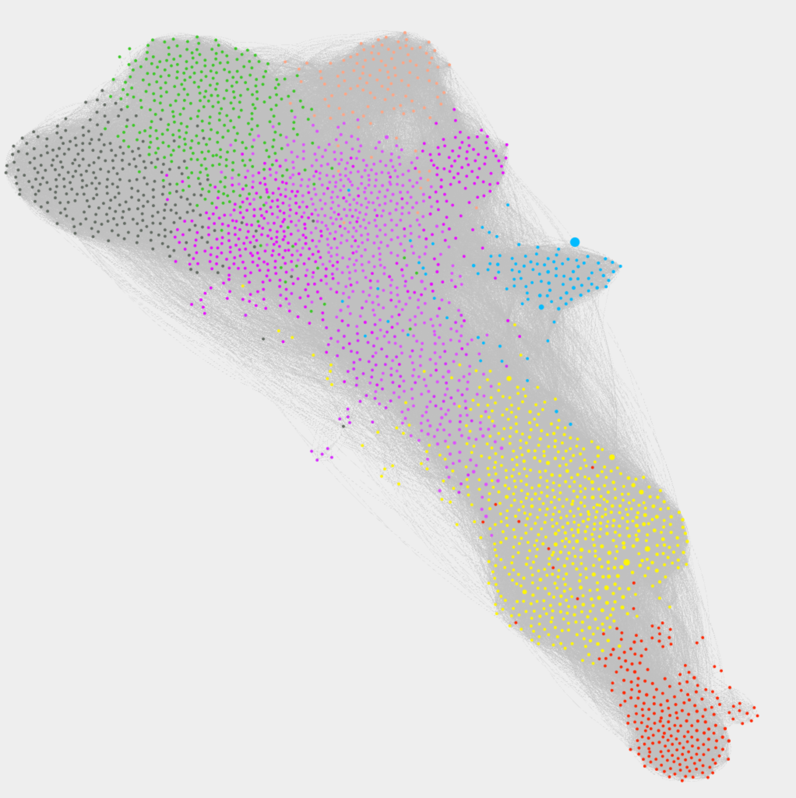
Telegram's "similar channels" feature directs users towards dangerous content. Interactive image. (Read more at SPLC)
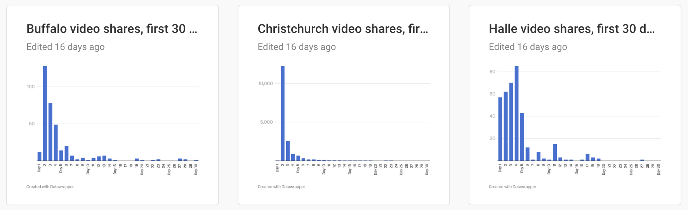
Videos created by perpetrators of mass shooting events are still widely available on social media and mainstream streaming services. (Read more at SPLC)
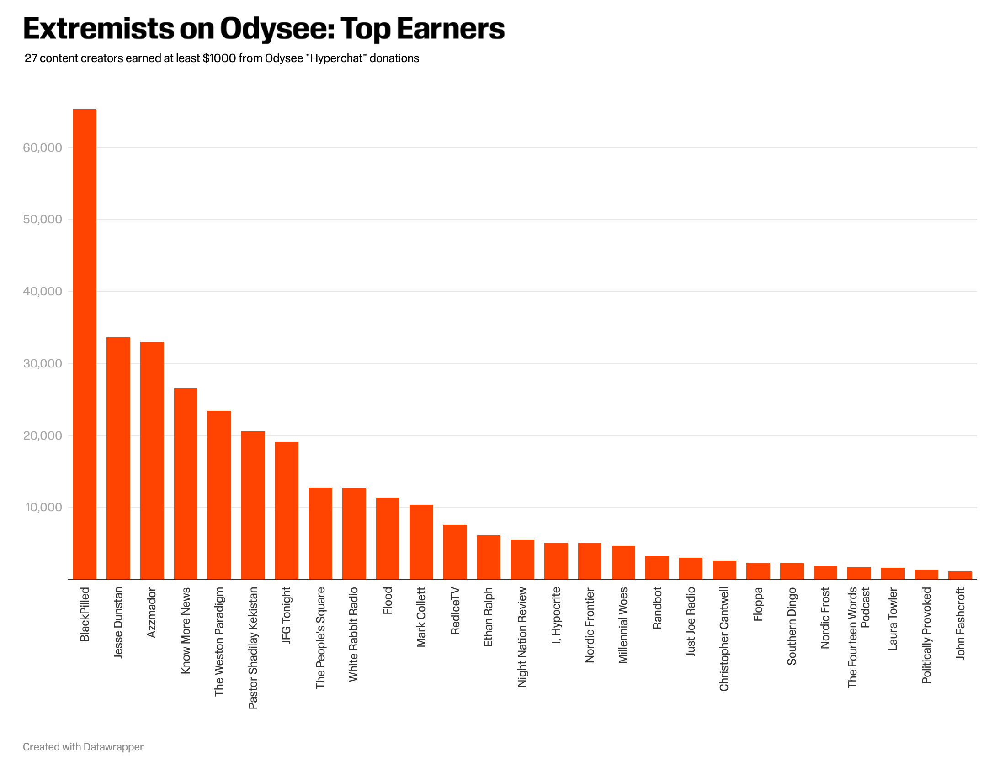
Odysee is a video streaming site with little to no content moderation, and provides a steady income stream for hate groups and extremists, including fugitives, some of whom are earning thousands of dollars each month peddling hateful or violent content on the site.(Read more at SPLC)
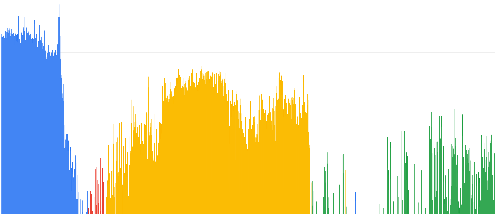
My work as a Belfer Fellow for ADL uncovers what happens after bad actors are removed from social media or other online environments. (Read more at ADL)
🏆 Best paper award. How do right-wing extremists use video streaming to make money? This is a deep dive into the network of streamers and donors using the DLive service. (Conference, PDF)
Describes our dataset of 27.8K channels and 317M messages from 2.2M unique users, designed to study social movements, protests, political extremism, and disinformation. (Read More on Arxiv)
Describes our dataset of Reddit's millions of subreddits, millions of users, and hundreds of millions of comments(Read More on Arxiv)
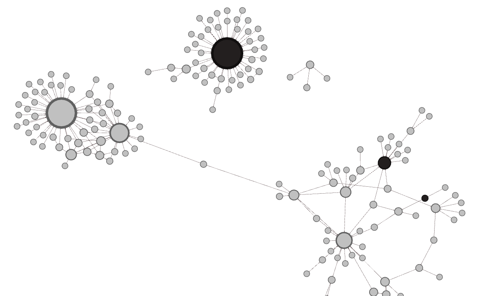
🏆 Best paper runner-up. Is it possible to understand the structure of a clandestine network, for example Proud Boys, using just their social media trace data? (Read More)
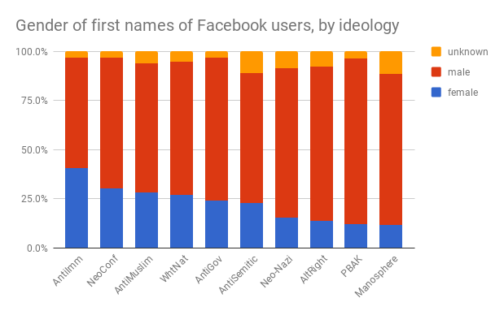
At what rates and in what capacity do women participate in extreme far-right ("radical right") political online communities? (Read More)
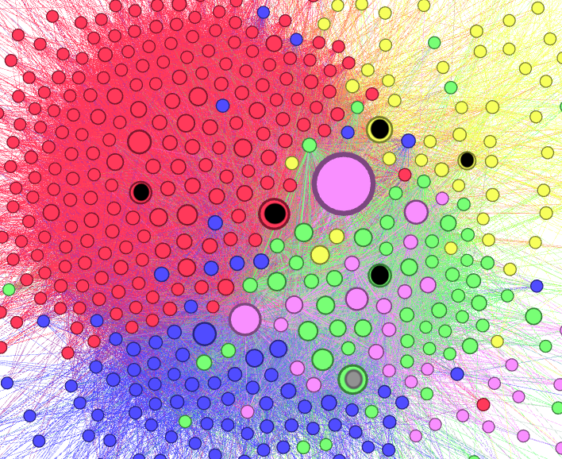
How do anti-Muslim political groups use the Facebook social network to build their own online communities? Do they crossover with other far-right political ideologies, such as anti-immigrant or white nationalists? (Read More)
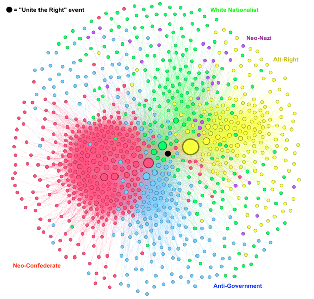
How "united" is the far-right? Which groups share members? Which ideologies tend to attract the same people? Which groups are responsible for uniting such distinct far-right ideologies at an event like the Charlottesville rally? (Read more)
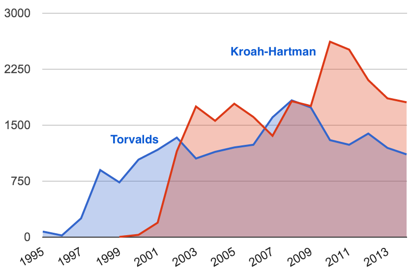
How do the leaders of the Linux Kernel project write in email? What are the salient features of their writing, and can we discern one leader from another? (Read more)
Role playing game and textbook covering the labor, economic, political, and social climate at the dawn of the Industrial Revolution in Manchester, England.
Advanced techniques for finding patterns hidden in data, including social media data and text.
Practical, beginner-friendly technical guidance for how to produce high quality, analysis-ready data.
How I realized what I was taught about threat intelligence was missing something crucial. Dark Reading, Feb 18.
Two incidents involving the same fake retailer reveal how modern scams can slip past both trusted publishers and even AI shopping tools. Jan. 12
What happens when the influencer isn't human? Dec. 18.
What if the price you're shown online has less to do with the product, and more to do with you? Nov 25.
Our comprehensive analysis of reported scams in 2025 reveals four distinct categories of fraud being enabled by AI. Oct 1.
The scam reporting landscape in the US is too complicated, and this hurts consumers. AI Journal, July 23.
The Data Lab collects and analyzes data showing how Telegram's "similar channels" feature drives users toward extremist channels. With Creede Newton. December 16.
The Data Lab investigates The Babylon Bee and its sister site, Not the Bee, uncovering multiple controversial businesses formerly run by owner Seth Dillon, along with the identities of 14 pseudonymous writers, despite the website’s efforts to keep information secure. Southern Poverty Law Center Techwatch. With Creede Newton. November 19.
Southern Poverty Law Center Hatewatch. With Creede Newton. November 5.
Southern Poverty Law Center Hatewatch. With Hannah Gais and Rachael Fugardi. August 29.
Southern Poverty Law Center Techwatch. How the digital videos created by mass shooters persist on social media platforms, inspiring new crimes. June 21.
Southern Poverty Law Center Techwatch. Why is the video streaming website "Odysee" a digital threat? November 6.
Southern Poverty Law Center Techwatch. Extremists Get Boost From Donor-Advised Funds, Bitcoin. October 18.
6-part series for Southern Poverty Law Center Hatewatch. With Michael Edison Hayden. February 1.
Southern Poverty Law Center Hatewatch. With Hannah Gais, Michael Edison Hayden, Cassie Miller and Jason Wilson. August 11.
Southern Poverty Law Center Hatewatch. With Hannah Gais, Jason Wilson, and Michael Edison Hayden. June 13.
Southern Poverty Law Center Hatewatch. With Hannah Gais, and Michael Edison Hayden. June 2.
Southern Poverty Law Center Hatewatch. With Michael Edison Hayden. May 26.
Southern Poverty Law Center Hatewatch. With Michael Edison Hayden. April 29.
Southern Poverty Law Center Hatewatch. With Michael Edison Hayden. April 6.
Southern Poverty Law Center Hatewatch. With Michael Edison Hayden. March 29.
Southern Poverty Law Center Hatewatch. With Hannah Gais. February 24.
Southern Poverty Law Center Hatewatch. With Jason Wilson. February 18.
Southern Poverty Law Center Hatewatch. With Jeff Tischauser and Michael Edison Hayden. February 1.
Southern Poverty Law Center Techwatch. With Jason Wilson.
Analysis of donation patterns and habits of early adopters of crypto, including Stefan Molyneux, Greg Johnson, Andrew Anglin and others. For Southern Poverty Law Center Techwatch. With Michael Edison Hayden.
Uncovering the network of tech workers keeping Infowars, America First, and Epik afloat. For Southern Poverty Law Center Techwatch. With Michael Edison Hayden and Hannah Gais.
Long-term study of 4000 episodes and 900 cast members on 18 different right-wing extremist podcasts. 4 parts. For Southern Poverty Law Center Techwatch. With Hannah Gais
Blockchain analysis project. For Southern Poverty Law Center Techwatch. With Michael Edison Hayden
Another example of alt-tech infrastructure supporting extremism. For Southern Poverty Law Center Techwatch. With Jason Wilson
Tracking donations to peddlers of election disinformation. For Southern Poverty Law Center Hatewatch. Southern Poverty Law Center Techwatch. With Hannah Gais.
Summary of platforms and techniques enabling extremist fundraising. For Southern Poverty Law Center Techwatch. With Cassie Miller and Hannah Gais
The rise of Telegram as the preferred method of spreading white supremacist terror propaganda. For Southern Poverty Law Center Hatewatch. With Hannah Gais.
What are the key technical features that make the Telegram app so appealing to hate and terror groups? At Center for Analysis of the Radical Right
Inside the radical right's video addiction: Moving from Youtube to DLive & Entropy. At Center for Analysis of the Radical Right
Why are radical right groups shifting to "alternative" tech? At Center for Analysis of the Radical Right
Why is it still so easy to find violent white supremacist content online, even though social media companies keep claiming that they are working overtime to delete it? At Brookings Institution
It's difficult to track the spread of digital materials, and new technologies will make it even harder. At Salon and others for The Conversation
BBC Panorama uses my research to understand how Telegram pushes users towards extremist content. Related print story. (December, 2024)
I talk with the hosts of the Boston Public Radio Podcast about the video streaming site Odysee, and how it enables extremist fundraising. (September, 2024)
I talk with Brian Lamb on the BookNotes+ podcast about Proud Boys and other extremist groups. (February, 2023)
2022 Documentary covering the fallout from January 6th. Episode 5.
PBS Frontline and ProPublica examine how far-right groups were emboldened and encouraged by former President Trump and how individuals were radicalized and brought into the political landscape (13:50 mark). April 2021.
Investigation of extremism in online gaming. (September, 2021)
Outlines some basic data science techniques for studying extremism online. February, 2020 at Furman University.
De-platforming and the problem of social media (January, 2021)
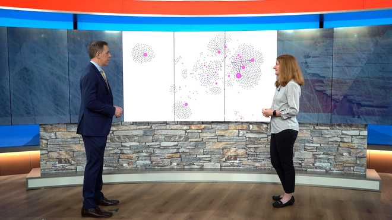
Hearst explores my data to explain how online hate is financed. (May, 2021)
I talk with Right Rising about monetized propaganda. How are white nationalists using popular live-streaming to make money? (December, 2020)
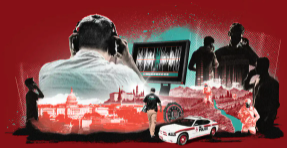
I help analyze "The Base", an international terrorist group plotting for a race war. Parts 1, 3, and 4. (October, 2020; May 2021)
I talk about how online organizing of White supremacists and other right-wing extremists has evolved (June, 2020)
We discuss data mining and network analysis of neo-Nazi, neo-Confederate, fascist, and other far-right extremist podcasts. (June, 2020)
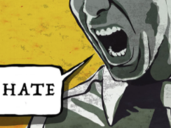
We discuss the rise of "Alt-Tech" social media platforms that enable online extremism (June, 2019)